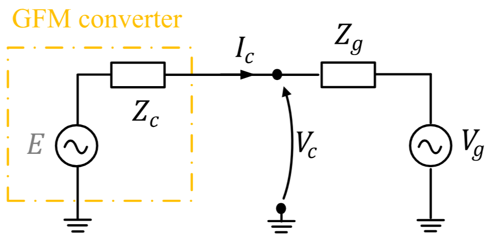
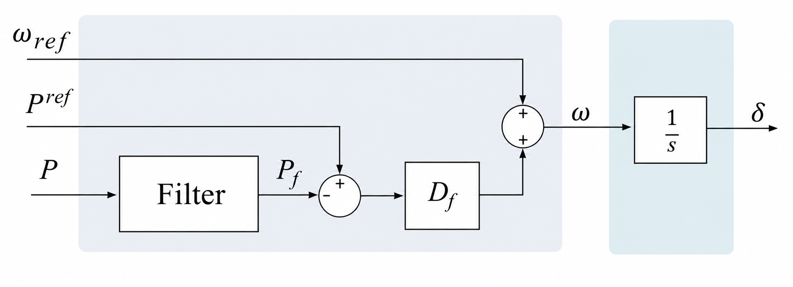
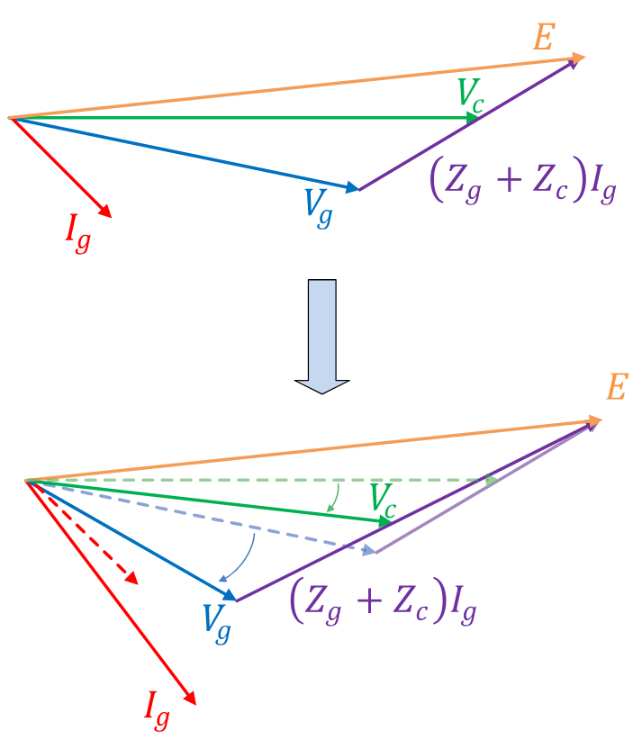

9. Grid-forming inverters
A grid-forming (GFM) converter holds a voltage phasor behind a coupling reactance and sets its own frequency from a droop law. That makes it look like a synchronous machine to the network — same nodal current injection, same $dq$ interface — while its internal dynamics have nothing in common with a swing equation. There is no rotor, no $H$, no $2H\dot{\Delta\omega} = P_m - P_e$. Frequency is an algebraic function of measured power.
TSCOPF supports a mixed fleet: some units are synchronous machines with the 4th-order model of chapter 3, some are GFM converters with the model below, and they share one nodal network and one optimisation problem.
DynModelConfig(
gen_order = DQ_4TH, # required
network_form = FULL_BUS, # required
allow_gfm = true,
)validate_dyn_config! rejects allow_gfm outside DQ_4TH + FULL_BUS, and rejects it under TSC-DCOPF. A further runtime check in resolve_sg_gfm_gens! throws DQ FULL_BUS requires at least one active SG (all-GFM fleets unsupported) — the COI reference needs at least one machine with inertia, so a 100 % converter fleet is not representable today.
| Symbol | Meaning | Column |
|---|---|---|
| $X_{\ell,c}$ | Coupling (filter) reactance behind the terminal | Xl |
| $m_{p,c}$ | Active-power / frequency droop | mp |
| $m_{q,c}$ | Reactive-power / voltage droop | mq |
| $K_{pv,c}$, $K_{iv,c}$ | Q–V PI gains | Kpv, Kiv |
| $T_{f,c}$ | Measurement-filter time constant | Tf |
| $E^{\min}_c$, $E^{\max}_c$ | Internal-voltage clip | Emin, Emax |
| $I^{\max}_c$ | Current-limiter threshold | Imax |
| $P^{\min}_c$, $P^{\max}_c$ | Active-power set-point box | Pmin, Pmax |
| $E_{\mathrm{int},c}$ | PI integrator state (clipped) | state |
| $E_{\mathrm{droop},c}$ | PI output = internal voltage magnitude (clipped) | state |
| $P^{\mathrm{meas}}_c, Q^{\mathrm{meas}}_c, V^{\mathrm{meas}}_c$ | Filtered measurements | states |
Fleet membership
GFM units are not flagged inside the SG file. They live in a separate CSV named by TransientConfig.gfm_dynamic_filename (default gfm_dynamic_data.csv), read into SystemData.DGFM, and membership is decided by an id partition: a generator id appearing in DGFM is a converter, everything else in active_gen is a synchronous machine (sg_active_gens / gfm_active_gens). The two sets are recomputed per disturbance window by resolve_sg_gfm_gens! and cached in dyn_model_dict[:meta][:sg_gens] / [:gfm_gens].
The practical consequence for anyone post-processing results: any loop keyed on machine inertia H must skip GFM ids, because those rows simply do not exist in DGEN_DYN. Membership is available from dyn_model_dict[:meta][:gfm_ids].
Per-unit bases
gfm_dynamic_data.csv is written on each converter's own MVA base, given by the InvBase column (accepted aliases mach_base_MVA, inv_base; a zero entry falls back to the system base). apply_gfm_base_conversion! rescales the whole table to system base at read time, with $\beta_c = S^{\mathrm{sys}}_{\mathrm{base}} / S^{\mathrm{mach}}_{\mathrm{base},c}$:
\[X_\ell \leftarrow \beta X_\ell, \quad m_q \leftarrow \beta m_q, \quad m_p \leftarrow \beta m_p, \quad P^{\max} \leftarrow P^{\max}/\beta, \quad P^{\min} \leftarrow P^{\min}/\beta, \quad I^{\max} \leftarrow I^{\max}/\beta .\]
Impedances and droop gains scale up with $\beta$, power and current ratings scale down — the usual direction. Everything downstream of the reader, including every equation on this page, is already on system base. In the bundled 9bus_gfm case InvBase = 100 equals the system base, so $\beta = 1$ and the conversion is a no-op; it matters as soon as converters of different sizes are mixed.
The parser accepts these two columns and stores them on DGFM, but no builder reads them. They are placeholders for an active-power limiter that is not implemented. Setting them has no effect on any result.
Circuit interface

The converter is modelled as an internal source $E$ behind a purely inductive coupling $Z_c = jX_{\ell,c}$ (Xl), delivering $I_c$ into the network bus voltage $V_c$. TSCOPF has no separate $Z_g$: the network side is the full nodal $Y_{\mathrm{bus}}$, and $V_c$ is the FULL_BUS bus-voltage variable that the converter shares with every other element at that bus. There is no resistance in the coupling — unlike the SG stator, which carries Ra.
The converter's internal phasor is placed on the $q$ axis of its own rotating frame, so in the $dq$ variables shared with the synchronous machines $E_{d,c} = 0$ and $E_{q,c} = E_{\mathrm{int},c}$. With the terminal projections $V_{d} = V_{k}\sin(\delta_c - \theta_k)$ and $V_{q} = V_{k}\cos(\delta_c - \theta_k)$ (same convention as chapter 3, figure parktransformx), the coupling gives:
\[\begin{align} \label{eq:gfm-coupling-9} V_{d,c} - E_{d,c} - X_{\ell,c} I_{q,c} &= 0 , & V_{q,c} - E_{q,c} + X_{\ell,c} I_{d,c} &= 0 , \\[4pt] \label{eq:gfm-injection-9} P_{e,c} &= V_{d,c} I_{d,c} + V_{q,c} I_{q,c} , & Q_{e,c} &= V_{q,c} I_{d,c} - V_{d,c} I_{q,c} . \end{align}\]
\[\eqref{eq:gfm-injection-9}\]
is the same terminal map used for synchronous machines, which is exactly why a mixed fleet needs no special-casing in the KCL: Id/Iq from a converter and from a machine enter the nodal balance identically. The pre-fault forms are stamped by Attach_GFM_init! into the same eq_const_Ed_init / eq_const_Vd_init / eq_const_P_init families as the SG rows, keyed by generator id.
Solving $\eqref{eq:gfm-coupling-9}$ for the currents gives $X_\ell I_d = E_q - V_q$ and $X_\ell I_q = V_d$, which is the pair the current limiter below scales.
Warm start
gfm_machine_warmstart maps the ACOPF solution at the converter bus to an initial internal phasor by the textbook construction $V_{\mathrm{int}} = V_c + jX_\ell I_c$ with $I_c = (P_g - jQ_g)/\bar{V_c}$, then reads off $\delta_c = \angle V_{\mathrm{int}}$, $E_c = |V_{\mathrm{int}}|$, and projects the current onto the resulting frame. As with every FULL_BUS path this only sets start= values; the equalities above are what actually pin the operating point.
Frequency: droop, not inertia

Droop block. The measurement filter is the first-order lag on $P$ (Tf); $D_f$ is the droop gain mp; $\omega_{\mathrm{ref}}$ is synchronous speed, so the block's output $\omega$ becomes the deviation $\Delta\omega_c$ in TSCOPF's variables; and the $1/s$ integrator is the angle update. Note what the diagram makes visible: the path from power error to frequency contains no integrator — frequency responds algebraically. All of the converter's "inertia" is the filter lag $T_f$.
Both discretisations of $T_{f,c}\,\dot{x} = u - x$ are available, selected per step by gfm_integrator (see below):
\[\begin{align} \label{eq:gfm-filter-9} x^t_c &= \frac{T_{f,c}}{T_{f,c} + \Delta t}\,x^{t-1}_c + \frac{\Delta t}{T_{f,c} + \Delta t}\,u^t_c &&\text{(backward Euler)} , \\[4pt] \label{eq:gfm-filter-trap-9} x^t_c\,(1 + c) &- x^{t-1}_c\,(1 - c) - c\left(u^t_c + u^{t-1}_c\right) = 0 , \quad c = \frac{\Delta t}{2\,T_{f,c}} &&\text{(trapezoidal)} , \end{align}\]
with $x \in \{P^{\mathrm{meas}}, Q^{\mathrm{meas}}, V^{\mathrm{meas}}\}$. Inputs are $P_{e,c}$, $Q_{e,c}$, and the bus magnitude $V_k$. _add_gfm_measurement_filter! degenerates to a pass-through equality $x = u$ when $T_{f,c} \le 10^{-9}$ on either branch, so a zero in the CSV means unfiltered, not division by zero.
At $t = 1$ the trapezoidal branch needs $u^0_c$. In the fault window the init equalities eq_const_gfm_{Pmeas,Qmeas,Vmeas}_init pin $x^0_c = u^0_c$, so the correction term vanishes identically; in the post-fault window $u^0_c$ is the last fault-window $P_{e,c}$ / $Q_{e,c}$ / $V_k$, which is genuinely distinct from the state anchor.
DynModelConfig.gfm_integrator governs the three filters and the Q–V PI integrator $\eqref{eq:gfm-pi-int-9}$ — nothing else. GFM $\delta$ and every synchronous-machine family keep following ode_first_step.
| value | filters and Q–V PI |
|---|---|
:backward_euler (default) | BE at every step — what the reference implementation does |
:follow_ode_first_step | BE at $t=1$ of each window iff ode_first_step = :backward_euler, trapezoidal otherwise and always for $t \ge 2$ |
:trapezoidal | trapezoidal at every step |
Backward Euler is L-stable and damps monotonically at any $\Delta t / T_{f,c}$. Trapezoidal is second-order accurate but only A-stable: its per-step factor $(1-c)/(1+c)$ turns negative once $\Delta t > 2\,T_{f,c}$, and the filtered signal then rings step-to-step into the droop → $\delta$ → limiter chain. The builder warns when a run crosses that line.
Why BE is the default despite being first-order. The trapezoidal row carries $u^{t-1}_c$ — that is $P_{e,c}$ / $Q_{e,c}$, nonlinear in $(V, \theta, \delta, I_d, I_q)$ — into every filter equation, and the Jacobian/Hessian fill-in this creates compounds with horizon length. On 9bus_gfm with a 150 ms bus fault at $\Delta t = 0.01$ s, :backward_euler solved a 3 s horizon in 205 iterations / 40.6 s of Ipopt time, while :follow_ode_first_step took 161 iterations / 2826 s — fewer iterations, ~70× the wall time, and a per-iteration cost that grew from 0.074 s at 60 steps to 17.6 s at 300 steps. The accuracy given up is small (worst rotor-angle gap 2.5° absolute, 1.8° relative to COI, ≈2 % of swing; objective 1.6e-5 relative), so the trapezoidal variants are positioned as opt-in for accuracy studies on short horizons rather than as the everyday setting.
One consequence worth stating for the PI: $E^{\mathrm{int}}$ integrates against the clipped previous state (the anti-windup convention). Under the trapezoidal branch half a step of the error at $t-1$ is integrated even where the clip already discarded it at $t-1$ — defensible, but not identical to the reference's BE anti-windup.
\[\begin{align} \label{eq:gfm-droop-9} \Delta\omega^t_c &= m_{p,c}\left(P^{\mathrm{set}}_c - P^{\mathrm{meas},t}_c\right) , \\[4pt] \label{eq:gfm-angle-9} \delta^t_c - \delta^{t-1}_c &= \frac{\Delta t}{2}\,\omega_s\left(\Delta\omega^t_c + \Delta\omega^{t-1}_c\right) \quad (t > 1), \qquad \delta^1_c - \delta^0_c = \Delta t\,\omega_s\,\Delta\omega^1_c . \end{align}\]
\[\eqref{eq:gfm-droop-9}\]
replaces the swing equation entirely. $P^{\mathrm{set}}_c$ is the converter's active-power set-point — stored in the shared :P_m container so that mechanical_power_for_swing and the export layer see one variable family across the fleet — pinned to the dispatch by $P^{\mathrm{set}}_c = P_{g,c}$ and box-bounded to $[P^{\min}_c, P^{\max}_c]$ from the CSV.
The angle update is trapezoidal from $t=2$, and its $t=1$ row follows ode_first_step — the same dial as the SG swing, EMF, AVR and governor. Under :backward_euler (the reference implementation's convention) the first row is $\delta^1 - \delta^0 = \Delta t\,\omega_s\,\Delta\omega^1$; under the default :trapezoidal it is $\delta^1 - \delta^0 = \tfrac{\Delta t}{2}\omega_s(\Delta\omega^1 + \Delta\omega^0)$, where $\Delta\omega^0 = m_p(P_{\mathrm{set}} - P_{\mathrm{meas}}^0)$ is the droop law one step back — identically zero entering the fault window, and equal to the last fault-on $\Delta\omega$ entering the post-fault window.
Until 2026-08-03 this row was backward Euler unconditionally, so a mixed fleet integrated the machines trapezoidally and the converters by Euler in the same step. If you are comparing against results from before that change, that one row is where a small first-step offset comes from.
Because $\eqref{eq:gfm-droop-9}$ is algebraic, a converter contributes no inertial term to the system response. Its $\Delta\omega_c$ still exists as a variable and still enters the angle integration, but it is slaved to the filtered power error.
Voltage: Q–V droop plus PI
The reactive channel is a droop reference feeding a PI regulator whose output is the internal voltage magnitude. Define the voltage error
\[\varepsilon^t_c = V^{\mathrm{set}}_c - m_{q,c} Q^{\mathrm{meas},t}_c - V^{\mathrm{meas},t}_c .\]
\[V^{\mathrm{set}}_c\]
is a decision variable pinned pre-fault by $V^{\mathrm{set}}_c = V_k + m_{q,c} Q_{g,c}$, so that $\varepsilon_c = 0$ at the initial operating point by construction.
\[\begin{align} \label{eq:gfm-pi-int-9} \tilde{E}^{\,t}_{\mathrm{int},c} - E^{t-1}_{\mathrm{int},c} &= \Delta t\,K_{iv,c}\,\varepsilon^t_c , & E^t_{\mathrm{int},c} &= \mathrm{clip}\bigl(\tilde{E}^{\,t}_{\mathrm{int},c};\, E^{\min}_c, E^{\max}_c\bigr) , \\[4pt] \label{eq:gfm-pi-out-9} \tilde{E}^{\,t}_{\mathrm{droop},c} &= E^t_{\mathrm{int},c} + K_{pv,c}\,\varepsilon^t_c , & E^t_{\mathrm{droop},c} &= \mathrm{clip}\bigl(\tilde{E}^{\,t}_{\mathrm{droop},c};\, E^{\min}_c, E^{\max}_c\bigr) . \end{align}\]
The integrator follows gfm_integrator, not ode_first_step — the same dial as the measurement filters above. The backward-Euler row is $\tilde{E}^{\,t}_{\mathrm{int}} - E^{t-1}_{\mathrm{int}} = \Delta t\,K_{iv}\varepsilon^t$; the trapezoidal row is $\tilde{E}^{\,t}_{\mathrm{int}} - E^{t-1}_{\mathrm{int}} = \tfrac{\Delta t}{2}K_{iv}(\varepsilon^t + \varepsilon^{t-1})$, with $\varepsilon^0$ the pre-window voltage error (zero entering the fault window by the $V^{\mathrm{set}}$ equilibrium, the last fault-on error entering the post-fault window). Its previous-step anchor is the clipped state $E^{t-1}_{\mathrm{int}}$ — the same anti-windup construction as the AVR clamp in chapter 8. clip is the smooth sqrt composition smooth_clip_expr with $\varepsilon_E = 10^{-4}$ (_GFM_EPS_E), so it is a nonconvex equality rather than a bound, and both the raw and clipped trajectories are kept as variables.
Both the integrator output and the PI output are clipped to the same $[E^{\min}, E^{\max}]$. In the bundled case $K_{pv} = 0$, so the regulator is purely integral and $E_{\mathrm{droop}} = E_{\mathrm{int}}$; a nonzero $K_{pv}$ is what separates the two trajectories.
The clipped $E_{\mathrm{droop},c}$ is the internal voltage magnitude that drives the current limiter, i.e. it plays the role of $E$ in the circuit diagram above.
Current limiter

Why a limiter is needed at all. The converter holds its internal phasor $E$ (orange) essentially fixed, so when the grid-side voltage $V_g$ (blue) collapses, the entire difference appears across the coupling impedance (purple) and the current $I_g$ (red) grows and rotates — dashed vectors are the pre-disturbance state, solid the post-disturbance one. Nothing in the droop or PI loops bounds that growth: the converter's semiconductors do. Model 9.5 caps $\lVert I \rVert$ by scaling both current components by one common factor $s_c$, so the phasor shrinks along its own direction. The alternative — clipping the $d$ and $q$ components separately — would rotate the current and change the power factor the converter presents to the fault.
Write the driving voltages across $X_\ell$ as $\Delta V_d = E_{\mathrm{droop},c} - V_{q,c}$ and $\Delta V_q = V_{d,c}$; from $\eqref{eq:gfm-coupling-9}$ these are exactly $X_\ell I_d$ and $X_\ell I_q$ in the unlimited case.
\[\begin{equation} \label{eq:gfm-limiter-9} X_{\ell,c} I_{d,c} = s_c\,\Delta V_{d,c}, \qquad X_{\ell,c} I_{q,c} = s_c\,\Delta V_{q,c}, \qquad s_c = \frac{I^{\max}_c X_{\ell,c}}{\mathrm{smoothmax}\!\left(\lVert \Delta V_c \rVert,\; I^{\max}_c X_{\ell,c}\right)} . \end{equation}\]
The same scalar $s_c \in (0, 1]$ multiplies both components, which is what preserves the angle. Below the threshold $\mathrm{smoothmax}$ returns $I^{\max}X_\ell$ and $s_c = 1$, leaving $\eqref{eq:gfm-coupling-9}$ intact; above it, $s_c \approx I^{\max}X_\ell / \lVert\Delta V\rVert < 1$. The whole computation is carried in volt units ($X_\ell I$ rather than $I$) to keep the scaling of the residuals comparable to the rest of the network block.
The norm is regularised, $\lVert \Delta V \rVert = \sqrt{\Delta V_d^2 + \Delta V_q^2 + (\varepsilon_V X_\ell)^2}$ with $\varepsilon_V = 10^{-8}$ (_GFM_EPS_NORM_V), so the gradient survives $\Delta V \to 0$.
When $I^{\max}_c \ge$ _GFM_IMAX_NO_LIMIT (20.0 p.u. on system base), _add_gfm_current_limiter! takes a different branch entirely: it stamps $X_\ell I_d = \Delta V_d$, $X_\ell I_q = \Delta V_q$ with no scaling and no smoothmax. This is not merely "a very high limit" — the nonconvex limiter rows disappear from the model, and the dual_gfm_limiter_* exports then price unsaturated stator algebra rather than a converter limit. Units taking the bypass are recorded on meta[:gfm_limiter_bypassed] and logged once per window, so it is never silent. The bundled 9bus_gfm case ships Imax = 1.2 and exercises the limiter.
Variable boxes
Every GFM variable that could otherwise wander is boxed. The boxes exist for solver robustness, not physics: the physical converter limit is the limiter equality above, and a converged solution sitting on a box is a signal to inspect the case rather than a meaningful shadow price.
The numbers are derived per unit from DGFM (Emin/Emax, Imax, Pmin/Pmax) by resolve_gfm_bound_limits, using margins and floors that live in TsBoundLimitsConfig:
| Knob | Default | Box it shapes |
|---|---|---|
gfm_δ_min_rad / gfm_δ_max_rad | $\pm\pi$ | pre-fault converter angle |
gfm_V_meas_min_pu / gfm_V_meas_max_pu | 0.0 / 2.5 | measured-voltage window |
gfm_E_raw_extra_pu, gfm_E_raw_slack_pu | 0.25, 0.5 | band on the raw PI states around $[E^{\min}, E^{\max}]$ |
gfm_E_clip_slack_pu | 0.05 | slack outside the smooth-clip range for the clipped states |
gfm_PQ_bound_scale, gfm_PQ_bound_offset_pu | 1.5, 0.05 | margin factor and offset in the $P$/$Q$/$I$ box formulas |
gfm_P_meas_floor_pu, gfm_Q_meas_floor_pu | 3.0, 3.0 | floors on the measured-power boxes |
gfm_I_floor_pu, gfm_I_ceiling_pu | 5.0, 20.0 | clamp on the $I_d$/$I_q$ box |
Each box has a TsBuilderConfig toggle, exactly like the SG families — but defaulting true rather than false, because the nonconvex limiter needs the guard-rails to converge:
bound_gfm_δ (pre-fault), and per window bound_gfm_{P_meas,Q_meas,V_meas,E_int_raw,E_int,E_droop_raw,E_droop,Id,Iq}_{tf,tpf}.
Switching one off removes that box and nothing else — no JuMP bound at creation, no ≤-row, no manifest entry. Expect a harder solve rather than a different optimum; if turning a box off does move the objective, it was binding and should be reported as a limit, not a guard-rail.
The boxes honour bound_encoding: explicit $\le$ rows under CONSTRAINT, JuMP variable bounds plus a bound-manifest entry under VARIABLE. Either way the duals export under the same names (dual_LB_gfm_Id_tf, dual_UB_gfm_E_droop_tf, …).
The smoothing constants are not knobs. _GFM_EPS_E, _GFM_EPS_NORM_V, _GFM_EPS_LIM_I and _GFM_IMAX_NO_LIMIT are module constants in functions_4_TS_gfm.jl: each has one correct order of magnitude, and varying them changes solver behaviour rather than the model being studied.
Which GFM duals are exported
The transient equality families are stored per (generator, time step) under eq_const_gfm_<family>_tf / _tpf. Registered for export:
| Export | Constraint | Reads as |
|---|---|---|
dual_gfm_droop | $\eqref{eq:gfm-droop-9}$ | price of the P–f droop link — converter frequency support |
dual_gfm_limiter_Id, dual_gfm_limiter_Iq | $\eqref{eq:gfm-limiter-9}$ | converter current headroom |
dual_gfm_Eint_clip, dual_gfm_Edroop_clip | $\eqref{eq:gfm-pi-int-9}$, $\eqref{eq:gfm-pi-out-9}$ | value of the Q–V saturation — voltage-support scarcity |
dual_gfm_Pe, dual_gfm_Qe | $\eqref{eq:gfm-injection-9}$ | injection coupling into KCL, comparable with the SG stator rows |
dual_LB/UB_gfm_Id_tf, _Iq_tf, _E_int_tf, _E_droop_tf | boxes above | guard-rails; expect zero |
The measurement filters, the $\delta$ integration step, and the raw-E definitions are stored under the same naming scheme but not registered — they are bookkeeping rows, and the debug CSVs below surface their duals directly.
What a run writes for the converters
Trajectories land in Transient_Stability/CSV/ (and, with save_ts_plots, as SVGs): gfm_P_meas, gfm_Q_meas, gfm_V_meas, gfm_E_int, gfm_E_int_raw, gfm_E_droop, gfm_E_droop_raw, and gfm_current_loading — the last being $\lVert I \rVert / I^{\max}$, where 1.0 means the limiter of Model 9.5 is saturating. Two overlay figures (gfm_E_int_clip.svg, gfm_E_droop_clip.svg) put each raw PI state against its clipped counterpart, so the visible gap is the anti-windup clip acting — the voltage-loop counterpart of the dq_E_fd vs dq_E_fd_unlim pair in chapter 8.
Setting save_ts_debug_csv = true adds Transient_Stability/CSV/Debug/, one row per (window, generator, step) carrying value, distance to the limit, and dual together:
| File | Answers |
|---|---|
gfm_filter_debug.csv | Are the measurement filters doing what Tf says? One row per channel ($P$, $Q$, $V$) with $\alpha$, $\beta$, the state, its previous value, the raw input, and the filter dual |
gfm_limiter_debug.csv | Is the current limiter binding, and what does it cost? $V_d$, $V_q$, $\Delta V$, Iraw, Iout, I_margin, Iout_over_Imax, scale, and the duals of the two limiter rows plus $P_e$ / $Q_e$ |
gfm_voltage_debug.csv | Is the Q–V PI clip active? The raw and clipped states with their distance to each edge of $[E^{\min}, E^{\max}]$, and the four PI duals |
swing_debug.csv | The SG side: $H$, $D$, accelerating power, $\delta$ and $\Delta\omega$ with their steps, plus each machine's distance to the stability corridor — δ_util is the corridor analogue of Iout_over_Imax, 1.0 meaning the machine sits on the limit — and the corridor duals |
The column layout follows the reference implementation's Debug/ folder so a parity check is a direct CSV diff. dual_accel in swing_debug.csv is NaN by construction: the package folds the accelerating power into the swing rows rather than carrying a separate constraint for it, so the value exists but there is no row to price.
What stays synchronous-machine-only
This is the modelling choice most likely to matter when interpreting results.
The centre of inertia, the $\delta$–COI corridor of Model 5.5, and the optional $\Delta\omega$–COI corridor all iterate sg_gens only. Converters are excluded from the COI weighted average (they have no $H$ to weight with) and are not subject to the angle or speed corridors. Nodal KCL, by contrast, injects every active unit through $\eqref{eq:gfm-injection-9}$.
So a mixed-fleet TSC-OPF constrains synchronous-machine coherency while letting converter angles move freely, and prices the stability constraint against the SG subset. That is defensible — converters do not lose synchronism in the pole-slip sense, and the first-swing criterion is a machine criterion — but it means the stability duals reported for a mixed fleet answer a narrower question than the SG-only case: what it costs to keep the remaining machines together, given whatever the converters do. Add converters and the SG corridor generally gets easier to satisfy, so the dual falls; that fall is a substitution effect, not evidence that stability got cheaper in an absolute sense.
Where this lives in the code
| Piece | Function | File |
|---|---|---|
| Membership partition | gfm_id_set, sg_active_gens, gfm_active_gens, resolve_sg_gfm_gens! | functions_4_TS_gfm.jl |
| Base conversion | apply_gfm_base_conversion!, Parse_GFM_Dynamic_DataFrame | functions_2_read_input_files.jl |
| $\eqref{eq:gfm-coupling-9}$, $\eqref{eq:gfm-injection-9}$ pre-fault | Attach_GFM_init! | functions_4_TS_gfm.jl |
| Warm start | gfm_machine_warmstart | functions_4_TS_gfm.jl |
| $\eqref{eq:gfm-filter-9}$, $\eqref{eq:gfm-filter-trap-9}$ | _add_gfm_measurement_filter! | functions_4_TS_gfm.jl |
| $\eqref{eq:gfm-droop-9}$, $\eqref{eq:gfm-angle-9}$, $\eqref{eq:gfm-pi-int-9}$, $\eqref{eq:gfm-pi-out-9}$ | Attach_GFM_fault!, Attach_GFM_postf! | functions_4_TS_gfm.jl |
| Smooth clip | smooth_clip_expr, smooth_min_expr, smooth_max_expr | functions_4_TS_gfm.jl |
| $\eqref{eq:gfm-limiter-9}$ | _add_gfm_current_limiter! | functions_4_TS_gfm.jl |
| Steady-state converter limits | attach_gfm_acopf_limits! | functions_4_TS_gfm.jl |
| Validation | validate_dyn_config! | engine.jl |
Steady-state limits on the ACOPF side
The converter also constrains the dispatch, not only the transient. attach_gfm_acopf_limits! adds two rows per active GFM to the ACOPF (and to the warm-start solve):
\[P_{g,c}^2 + Q_{g,c}^2 \le \left(V_k \cdot \frac{S^{\mathrm{mach}}_{\mathrm{base},c}}{S^{\mathrm{sys}}_{\mathrm{base}}}\right)^{\!2}, \qquad \left(V_k + \frac{Q_{g,c} X_{\ell,c}}{V_k}\right)^{\!2} + \left(\frac{P_{g,c} X_{\ell,c}}{V_k}\right)^{\!2} \le \bigl(E^{\max}_c\bigr)^2 .\]
The first is an apparent-power circle at a current rating of 1.0 p.u. on the converter's own base. The second bounds the internal voltage magnitude implied by the terminal operating point. Their duals price converter headroom in the dispatch directly.
The steady-state circle uses the converter nameplate current, deliberately not the dynamic Imax from gfm_dynamic_data.csv. A dispatch is a sustained operating point and cannot bank on overload. The transient limiter of Model 9.5 uses Imax instead — typically 1.2 p.u. — because power electronics tolerate brief overcurrent up to the thermal limit of the semiconductor junctions, and that headroom is genuinely available during a fault but not in the pre-fault schedule. The apparent asymmetry between the two blocks is therefore intentional: same device, two time scales, two ratings.
The assembled TSC-OPF and its dual export are on 6. The TSC-OPF, assembled and 7. Duals, KKT, and the economics.